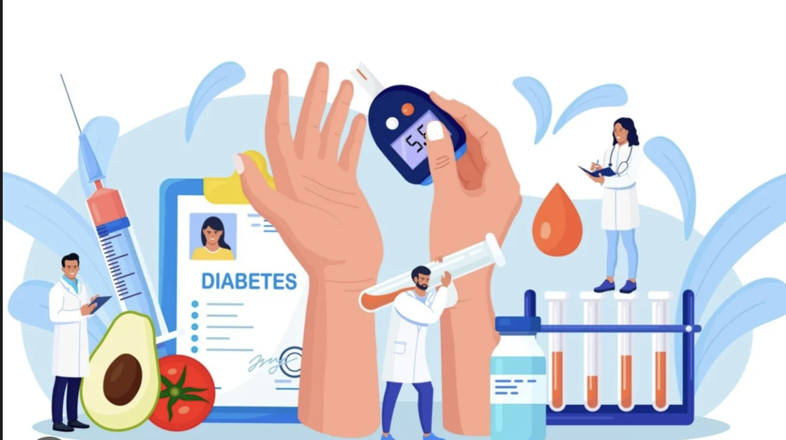
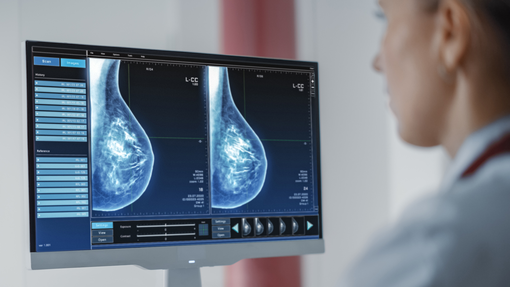

I have led and contributed to numerous research projects, focusing on the application of AI, machine learning, and image processing to solve complex problems in healthcare and diagnostics.

Adverse Drug Effects in Diabetic Patients
Role: MSc Thesis Researcher | Affiliation: University of Warwick
Using AI and ML techniques to analyse adverse drug reactions in diabetic patients, considering patient demographics, drug types, and clinical variables. The goal is to develop predictive models to identify high-risk combinations and support safer, personalized treatment plans.
Key Highlights:
- Master's Thesis Project guided by Prof. Michael Chappell.
- Focuses on predictive modeling for personalized drug safety.

Automated Breast Cancer Detection & Segmentation
Role: Lead Researcher | Affiliation: University of Warwick
Designed and deployed an automated system using advanced image processing, ML, and deep learning for detecting and segmenting breast cancer from medical images. Validated system performance on benchmark datasets.
Key Highlights:
- Led research work in support of the NHS.
- Deployed as a prototype for clinical testing.
- Published at ICTS4eHealth 2025 Conference.

Tooth GenAI: Advanced Dental Diagnosis System
Role: Lead Researcher (Undergraduate Dissertation)
Led this research project, funded by the Government of India. Developed, tested, and deployed a generative AI model to enhance dental diagnosis accuracy and streamline treatment planning workflows, coordinating a multidisciplinary team.
Key Highlights:
- Funded by the Government of India.
- Patent in final stages of acceptance.
- Deployed at M S Ramaiah Hospital (Dept. of Periodontology).
- Received Best Project Award.

Non-Invasive Glucose Monitoring System using AI
Role: Researcher | Affiliation: M S Ramaiah University
Focused on building a real-time health monitoring system using wearable IoT devices and biomedical sensors to gather patient data and accurately detect blood glucose levels non-invasively.
Key Highlights:
- Patent Pending for the novel system.
- Ramaiah Hackathon Best Project Award (2023).
- Integrates AI, Biomedical Sensors, and IoT.

Heart-Syn: AI-Driven Cardiac Health Monitoring
Role: Researcher | Affiliation: University of Warwick
This project uses a webcam to estimate vital signs like heart rate, respiratory rate, and body temperature in real-time. It leverages computer vision and Fast Fourier Transform to compute physiological cues, suitable for home health tracking.
Key Highlights:
- Vision-based, real-time vital sign monitoring.
- Designed for telemedicine and home-based health tracking.